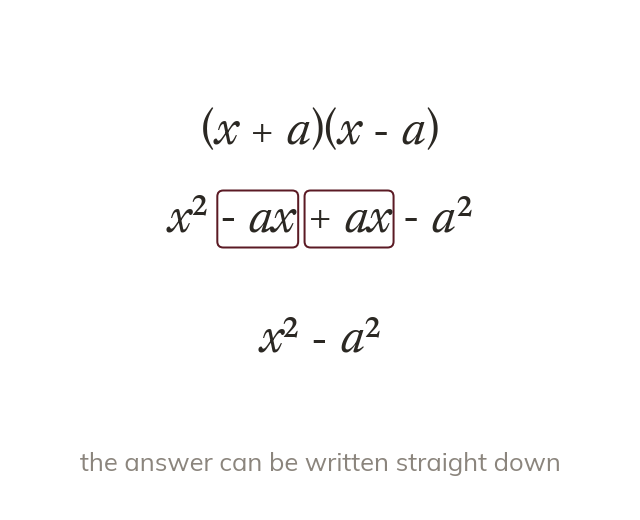
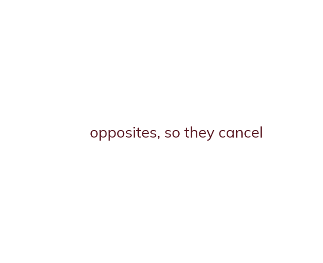

Difference of two squares
In the middle terms and cancel. So the answer is the difference of two squares.
is a special case, and expanding it fully shows why - First: times
Outer: times Inner: times Last: times
The two middle terms, and are opposites and cancel to zero, leaving - the difference of two squares. Recognising this pattern (two brackets with identical terms, one addition and one subtraction) means the answer can be written straight down as (first term)² minus (second term)², without expanding term by term.
Outer: times Inner: times Last: times
The two middle terms, and are opposites and cancel to zero, leaving - the difference of two squares. Recognising this pattern (two brackets with identical terms, one addition and one subtraction) means the answer can be written straight down as (first term)² minus (second term)², without expanding term by term.